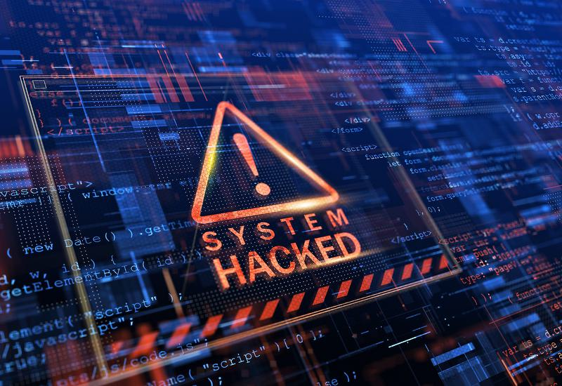

The recent ransomware incident at HCL Technologies, though contained in a restricted cloud environment without apparent widespread impact,
negatively influenced its stock market perception; This event reflects the escalating threat of ransomware attacks on Indian organisations
On 20 December, IT services provider HCL Technologies, in its quarterly report, shared that it was hit by a ransomware incident within a restricted cloud environment.
Following the attack, the company stated there was no “observable”
impact on the overall HCL Tech network. However, news of the attack affected the company’s perception of the stock market, leading to a decline in its share prices.

HCL Tech is an Indian information technology company providing solutions in the digital realm, including end-to-end digital offerings, cloud-based solutions, and software. The company is one of the top software solution providers in India. On 20th December, the company, in its quarterly earnings report, sharedthat it was hit by a ransomware incident in an isolated cloud environment. The company, however, did not disclose specific details of the attack. HCL Tech further stated that cybersecurity and data protection are top priorities. A detailed investigation, in consultation with relevant stakeholders, was launched to assess the root cause. Ransomware is extortion software designed to lock or encrypt a device or data on a system and then demand a ransom for its release. The attacks follow a simple plan wherein attackers gain access to a device or protected data in the cloud. Depending on the nature of the ransomware, it will then lock or encrypt devices, data stored in the cloud, or the entire internal network of an organisation. Attackers usually leave behind a message with instructions on the ransom amount, mode of transfer, or instructions on how to contact them for further guidance.
Indian organisations are increasingly targeted by ransomware attacks. A 2023 study conducted by Sophos, a cybersecurity company,showed that 73% of organisations reported being victims of ransomware attacks, up from 57% the previous year. Of these, 77% of organisations reported that attackers succeeded in encrypting data, with 44% paying the ransom to retrieve their data, a significant drop from 78% compared to the previous year. However, despite paying the ransom, companies doubled their cost of recovery for the data held hostage by threat actors compared to organisations that did not pay the ransom and relied on backups. Additionally, according to the Indian ransomware report released by India’s Computer Emergency Response Team (CERT-In),a 51% increase in ransomware incidentswas reported in H1 2022, with a majority of these attacks targeting data centres, IT, and TeS sectors in the country.
Threat actors tend to focus their attacks on organisations that hold valuable data. The more value the data has to the organisation and its stakeholders, the higher the chances that the ransom will be paid. IT organisations and software vendors hold a lot of valuable data, including sensitive information like intellectual property. If leaked by threat actors, it could lead to a drop in their value and replication of software, devaluing the company and threatening its revenue streams, making them a valuable target for cybercriminals. IT organisations providing cloud security and data solutions also hold large repositories of data for their clients. Successful attacks on them could potentially open the channel to target supply chains, adding pressure on companies to pay the ransom. Data held by IT organisations could include personally identifiable data of clients’ users, intellectual property, access credentials, and even financial information. This data can be leveraged to launch further attacks. IT organisations are also among the first to adopt new technologies and encourage the use of open architecture, which may not have the highest levels of protection against cyberattacks, making them a target for cybercriminals.
Earlier this year, in November, a U.S.-based subsidiary of Infosys was reportedly targeted by a ransomware attack. At the time,Infosys McCamish Systems faced an incidentinvolving a ransomware variant. However, the company did not share details of the attack, stating that further information would be provided following a comprehensive investigation. In March, Indian drug manufacturer Sun Pharma was hit by a cyberattack. A ransomware group claimed responsibility for the attack, impacting the company’s revenue due to containment measures implemented to mitigate the damage. In November 2022, a ransomware attack crippled the All India Institute of Medical Sciences (AIIMS) for days. Hackers reportedly demanded ₹200 crores in cryptocurrencyfrom the hospital.